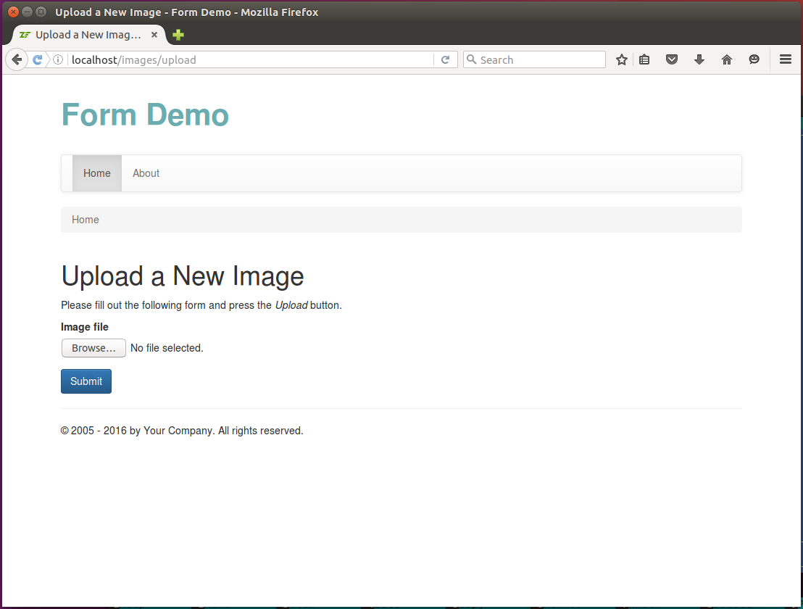
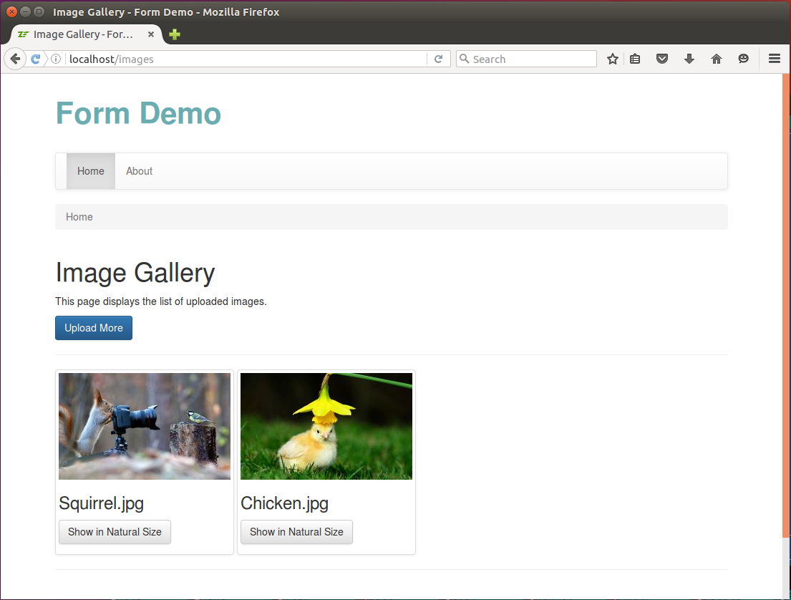
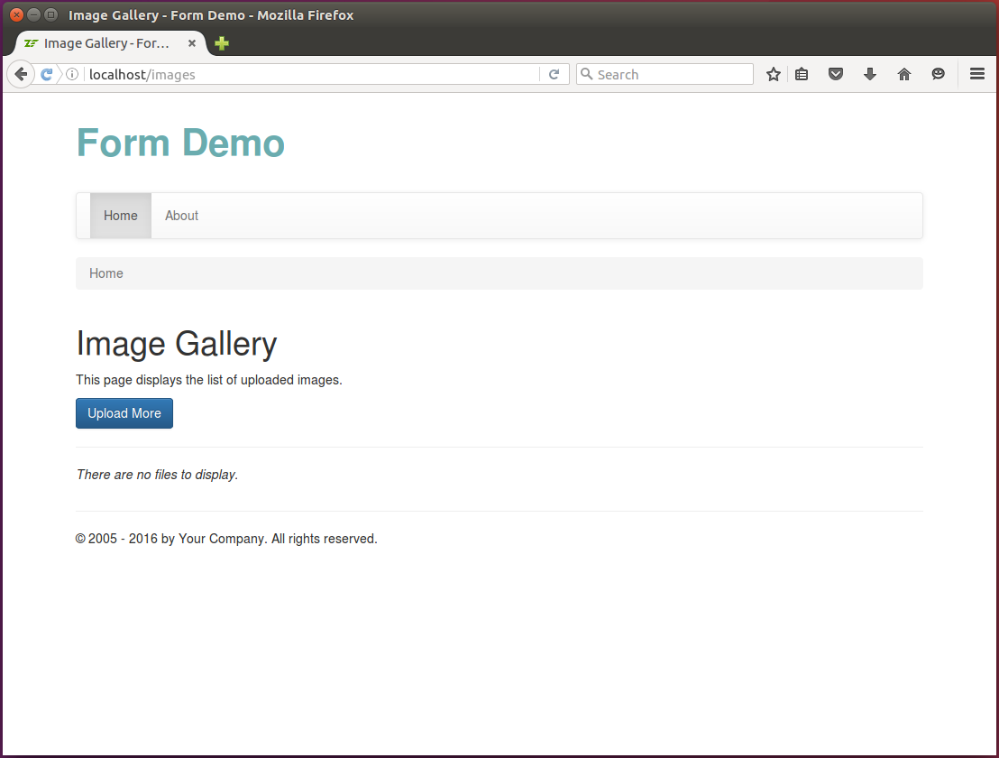
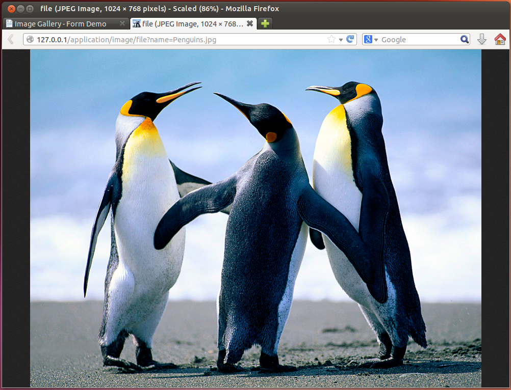

10.8. Ejemplo: Galería de Imágenes
Para mostrar como cargar archivos con Zend Framework 3, crearemos una Galería de Imágenes que consistirá de dos páginas web: la página de carga de imágenes permite cargar una imagen (figura 10.2) y la página de galería contiene la lista de las imágenes subidas (figura 10.3).
Podemos ver trabajando la Galería de Imágenes en la aplicación de ejemplo Form Demo que está adjunta a este libro.
 Figura 10.2. Página de carga de imágenes
 Figura 10.3. Página para la galería de imágenes
Para este ejemplo, crearemos los siguientes elementos:
- El modelo de formulario
ImageFormcapaz de subir los archivos de imagen. - La clase de servicio
ImageManagerdiseñada para obtener la lista de las imágenes subidas, recuperar información sobre una imagen y cambiar el tamaño de una images. - La clase
ImageControllerque contendrá los métodos de acción que muestran las páginas web. - La fábrica
ImageControllerFactoryque instanciará el controlador e inyectará las dependencias dentro del controlador. - Un archivo de plantilla de vista
.phtmlpor cada método de acción en el controlador.
10.8.1. Agregar el modelo ImageForm
Para este ejemplo, necesitaremos un modelo de formulario que se usará para cargar
los archivos de imagen. Llamaremos a está clase de modelo de formulario ImageForm.
Esta clase nos permitirá cargar un archivo de imagen al servidor. El formulario
tendrá los siguientes campos:
Un campo tipo
fileque permitirá al usuario seleccionar un archivo de imagen para subir.Un campo tipo
submitpara el botón que permite enviar los datos del formulario al servidor.
El código del modelo de formulario ImageForm se presenta más abajo. Este se
debe colocar en un archivo ImageForm.php guardado en la carpeta Form que
está dentro de la carpeta fuente del módulo:
<?php
namespace Application\Form;
use Zend\Form\Form;
// This form is used for uploading an image file.
class ImageForm extends Form
{
// Constructor.
public function __construct()
{
// Define form name.
parent::__construct('image-form');
// Set POST method for this form.
$this->setAttribute('method', 'post');
// Set binary content encoding.
$this->setAttribute('enctype', 'multipart/form-data');
$this->addElements();
}
// This method adds elements to form.
protected function addElements()
{
// Add "file" field.
$this->add([
'type' => 'file',
'name' => 'file',
'attributes' => [
'id' => 'file'
],
'options' => [
'label' => 'Image file',
],
]);
// Add the submit button.
$this->add([
'type' => 'submit',
'name' => 'submit',
'attributes' => [
'value' => 'Upload',
'id' => 'submitbutton',
],
]);
}
}
Ya hemos discutido sobre la creación de un modelo de formulario por lo que el código de arriba no debería ofrecer ningún problema para su comprensión. Solo queremos llamar la atención del lector que en la línea 19 colocamos el valor «multipart/form-data» para el atributo del formulario «enctype» que hace que el formulario use codificación binaria para sus datos.
En realidad, colocar explícitamente el atributo «enctype» en el constructor del formulario es opcional, porque la clase
Zend\Form\Element\Fileasigna este atributo cuando se llama al método del formularioprepare().
10.8.2. Agregar Reglas de Validación al Modelo ImageForm
Para mostrar el uso de los validadores y filtros diseñados para trabajar con
archivos que se cargan, los agregaremos a la clase de modelo de formulario
ImageForm. Queremos alcanzar los siguientes objetivos:
- Usando el validador
UploadFilerevisaremos si el archivo se subió a través del método POST de HTTP. - Usando el validador
IsImagerevisaremos si el archivo subido es una imagen (JPEG, PNG, GIF, etc.). - Con el validador
ImageSizerevisaremos si las dimensiones de la imagen están entre los límites permitidos. - Con el filtro
RenameUploadmoveremos el archivo subido a su carpeta de residencia final.
Para agregar reglas de validación al formulario modificamos el código de la clase
ImageForm de la siguiente manera:
<?php
namespace Application\Form;
use Zend\InputFilter\InputFilter;
// This form is used for uploading an image file.
class ImageForm extends Form
{
// Constructor
public function __construct()
{
// ...
// Add validation rules
$this->addInputFilter();
}
// ...
// This method creates input filter (used for form filtering/validation).
private function addInputFilter()
{
$inputFilter = new InputFilter();
$this->setInputFilter($inputFilter);
// Add validation rules for the "file" field.
$inputFilter->add([
'type' => 'Zend\InputFilter\FileInput',
'name' => 'file',
'required' => true,
'validators' => [
['name' => 'FileUploadFile'],
[
'name' => 'FileMimeType',
'options' => [
'mimeType' => ['image/jpeg', 'image/png']
]
],
['name' => 'FileIsImage'],
[
'name' => 'FileImageSize',
'options' => [
'minWidth' => 128,
'minHeight' => 128,
'maxWidth' => 4096,
'maxHeight' => 4096
]
],
],
'filters' => [
[
'name' => 'FileRenameUpload',
'options' => [
'target' => './data/upload',
'useUploadName' => true,
'useUploadExtension' => true,
'overwrite' => true,
'randomize' => false
]
]
],
]);
}
}
En el código de arriba se agregaron las siguientes validaciones de archivo:
El validador
UploadFile(línea 32) revisa si el archivo realmente se subió usando el método POST de HTTP.El validador
MimeType(línea 34) revisa si el archivo subido es una imagen JPEG o PNG. Esto se hace extrayendo la información MIME de los datos del archivo.El validador
IsImage(línea 39) revisa si el archivo subido es una imagen (PNG, JPG, etc.). Esto se hace extrayendo la información MIME de los datos del archivo.El validador
ImageSize(línea 41) permite revisar si las dimensiones del archivo están en un rango dado. En el código de arriba revisamos que la imagen tiene entre 128 y 4096 pixeles de ancho y que la altura de la imagen está entre 128 y 4086 pixeles.
En la línea 52, agregamos el filtro RenameUpload y lo configuramos para guardar
el archivo subido en la carpeta APP_DIR/data/upload. El filtro usará el
nombre del archivo original como nombre para el archivo de destino (opción
useUploadName). Si un archivo con el mismo nombre ya existe, el filtro lo
sobreescribirá (opción overwrite).
Para que los validadores
MimeTypeyIsImagefunciones debemos activar la extensión de PHPfileinfo. Esta extensión está habilitada por defecto en sistemas GNU/Linux como Ubuntu pero no en Windows. No debemos olvidar que después de activar la extensión debemos reiniciar el servidor Apache HTTP.
10.8.3. Escribir el servicio ImageManager
Como nos esforzamos por escribir código siguiendo el patrón de Diseño Guiado
por Dominio crearemos un clase de modelo de servicio para encapsular la
funcionalidad de la gestión de imágenes. Llamaremos a esta clase ImageManager
y la colocaremos en el espacio de nombre Application\Service. Además,
registraremos este servicio en el componente de administración de servicios
de la aplicación web.
La clase de servicio ImageManager tendrá los siguientes métodos públicos
(listados en la tabla 10.3):
| Método | Descripción |
|---|---|
getSaveToDir() |
Regresa la ruta de la carpeta donde guardamos los archivos de imagen. |
getSavedFiles() |
Regresa un arreglo con los nombres de las imágenes guardadas. |
getImagePathByName($fileName) |
Regresa la ruta del archivo de imagen guardado. |
getImageFileInfo($filePath) |
Regresa la información del archivo (tamaño, tipo MIME) a partir de la ruta de la imagen. |
getImageFileContent($filePath) |
Regresa el contenido del archivo de imagen. En caso de error, se regresa el booleano false. |
resizeImage($filePath, $desiredWidth) |
Cambia el tamaño de la imagen conservando su cociente de aspecto. |
De hecho, podríamos colocar el código que planeamos agregar dentro del servicio en las acciones del controlador, pero esto haría grande al controlador y difícil de probar. Con la introducción de la clase de servicio, mejoramos la separación de conceptos y la reusabilidad del código.
Agregamos el archivo ImageManager.php a la carpeta Service que esta dentro de la carpeta fuente del módulo. Agregamos el siguiente código al archivo:
<?php
namespace Application\Service;
// The image manager service.
class ImageManager
{
// The directory where we save image files.
private $saveToDir = './data/upload/';
// Returns path to the directory where we save the image files.
public function getSaveToDir()
{
return $this->saveToDir;
}
}
Como podemos ver en el código de arriba, definimos la clase ImageManager en la
línea 5. La clase tiene la propiedad privada $saveToDir 44 que
contiene la ruta a la carpeta que contiene nuestros archivos subidos (línea 8),
guardamos los archivos subidos en la carpeta APP_DIR/data/upload.
El método público getSaveToDir() (línea 11) permitirá recuperar la ruta de la
carpeta de los archivos subidos.
44) Aunque la clase ImageManager es una servicio y está enfocada en
proveer servicios, podemos tener propiedades para su uso interno.
Luego, vamos a agregar el método público getSavedFiles() a la clase de servicio.
El método escaneará la carpeta de subida y regresa un arreglo que contiene los
nombres de los archivos subidos. Para agregar el método getSavedFiles()
modificamos el código de la siguiente manera:
<?php
//...
// The image manager service.
class ImageManager
{
//...
// Returns the array of uploaded file names.
public function getSavedFiles()
{
// The directory where we plan to save uploaded files.
// Check whether the directory already exists, and if not,
// create the directory.
if(!is_dir($this->saveToDir)) {
if(!mkdir($this->saveToDir)) {
throw new \Exception('Could not create directory for uploads: ' .
error_get_last());
}
}
// Scan the directory and create the list of uploaded files.
$files = [];
$handle = opendir($this->saveToDir);
while (false !== ($entry = readdir($handle))) {
if($entry=='.' || $entry=='..')
continue; // Skip current dir and parent dir.
$files[] = $entry;
}
// Return the list of uploaded files.
return $files;
}
}
Con el método getSavedFiles(), primero revisamos si existe la carpeta de subida
(línea 16), y si no, se intenta crearla (línea 17). Luego, traemos la lista de
archivos en la carpeta (líneas 24-32) y la regresamos a quien llamo al método.
Luego, agregamos los tres métodos para traer la información sobre el archivo subido:
El método
getImagePathByName()tomará el nombre del archivo y le añadirá al principio la ruta a la carpeta de subida.El método
getImageFileInfo()recuperará la información MIME del archivo y su tamaño en bytes.Y el método
getImageFileContent()leerá los datos del archivo y los regresará como una cadena de caracteres.
Para agregar estos tres métodos, cambiamos el código de la siguiente manera:
<?php
//...
// The image manager service.
class ImageManager
{
//...
// Returns the path to the saved image file.
public function getImagePathByName($fileName)
{
// Take some precautions to make file name secure.
$fileName = str_replace("/", "", $fileName); // Remove slashes.
$fileName = str_replace("\\", "", $fileName); // Remove back-slashes.
// Return concatenated directory name and file name.
return $this->saveToDir . $fileName;
}
// Returns the image file content. On error, returns boolean false.
public function getImageFileContent($filePath)
{
return file_get_contents($filePath);
}
// Retrieves the file information (size, MIME type) by image path.
public function getImageFileInfo($filePath)
{
// Try to open file
if (!is_readable($filePath)) {
return false;
}
// Get file size in bytes.
$fileSize = filesize($filePath);
// Get MIME type of the file.
$finfo = finfo_open(FILEINFO_MIME);
$mimeType = finfo_file($finfo, $filePath);
if($mimeType===false)
$mimeType = 'application/octet-stream';
return [
'size' => $fileSize,
'type' => $mimeType
];
}
}
Finalmente, agregaremos a la clase ImageManager la funcionalidad para cambiar
el tamaño de la imagen. La funcionalidad para cambiar el tamaño de la imagen
se usará para crear imágenes en miniatura. Agregamos el método resizeImage()
a la clase ImageManager de la siguiente manera:
<?php
//...
class ImageManager
{
//...
// Resizes the image, keeping its aspect ratio.
public function resizeImage($filePath, $desiredWidth = 240)
{
// Get original image dimensions.
list($originalWidth, $originalHeight) = getimagesize($filePath);
// Calculate aspect ratio
$aspectRatio = $originalWidth/$originalHeight;
// Calculate the resulting height
$desiredHeight = $desiredWidth/$aspectRatio;
// Get image info
$fileInfo = $this->getImageFileInfo($filePath);
// Resize the image
$resultingImage = imagecreatetruecolor($desiredWidth, $desiredHeight);
if (substr($fileInfo['type'], 0, 9) =='image/png')
$originalImage = imagecreatefrompng($filePath);
else
$originalImage = imagecreatefromjpeg($filePath);
imagecopyresampled($resultingImage, $originalImage, 0, 0, 0, 0,
$desiredWidth, $desiredHeight, $originalWidth, $originalHeight);
// Save the resized image to temporary location
$tmpFileName = tempnam("/tmp", "FOO");
imagejpeg($resultingImage, $tmpFileName, 80);
// Return the path to resulting image.
return $tmpFileName;
}
}
El método resizeImage() toma dos argumentos: la ruta al archivo de imagen
$filePath y el ancho de la imagen miniatura $desiredWidth. Dentro del método
primero calculamos la altura apropiada para la imagen en miniatura (líneas 11-16)
manteniendo su cociente de aspecto. Luego, cambiamos el tamaño original de la imagen
y la guardamos en un archivo temporal (líneas 19-32).
Cuando la clase ImageManager está lista debemos registrar el servicio en el
componente de administración de servicios de la aplicación agregando las siguientes
líneas al archivo de configuración module.config.php.
<?php
return [
// ...
'service_manager' => [
// ...
'factories' => [
// Register the ImageManager service
Service\ImageManager::class => InvokableFactory::class,
],
],
// ...
];
10.8.4. Agregar la clase ImageController
Para el ejemplo Galería de Imagen crearemos la clase controladora ImageController.
El controlador tendrá los siguientes métodos de acción (listados en la tabla 10.4):
| Método de acción | Descripción |
|---|---|
__construct() |
Permitirá inyectar la dependencia ImageManager dentro del controlador. |
uploadAction() |
Muestra la página de subida de imágenes que permite cargar una imagen. |
indexAction() |
Muestra la página con la galería de imágenes que lista las imágenes subidas. |
fileAction() |
Provee la capacidad de descargar la imagen en tamaño completo o la imagen en miniatura. |
Para comenzar, creamos el archivo ImageController.php en la carpeta Application/Controller que está dentro de la carpeta fuente del módulo. Colocamos el siguiente pedazo de código dentro de archivo:
<?php
namespace Application\Controller;
use Zend\Mvc\Controller\AbstractActionController;
use Zend\View\Model\ViewModel;
use Application\Form\ImageForm;
// This controller is designed for managing image file uploads.
class ImageController extends AbstractActionController
{
// The image manager.
private $imageManager;
// The constructor method is used for injecting the dependencies
// into the controller.
public function __construct($imageManager)
{
$this->imageManager = $imageManager;
}
// This is the default "index" action of the controller. It displays the
// Image Gallery page which contains the list of uploaded images.
public function indexAction()
{
}
// This action shows the image upload form. This page allows to upload
// a single file.
public function uploadAction()
{
}
// This is the 'file' action that is invoked when a user wants to
// open the image file in a web browser or generate a thumbnail.
public function fileAction()
{
}
}
En el código de arriba definimos la clase ImageController que está en el espacio
de nombres Application\Controller, agregamos el método constructor y tres esbozos
de métodos de acción más en la clase: indexAction(), uploadAction() y fileAction().
Luego, llenaremos estos métodos de acción con código.
10.8.4.1. Agregar la acción de subida y la plantilla de vista correspondiente
Primero, completaremos el método uploadAction() de nuestro controlador. Este
método de acción gestionará la página web Cargar una Nueva Image y contiene
el formulario de subida. El formulario proveerá la capacidad de subir un archivo
de imagen a la galería.
Cambiamos el archivo ImageController.php de la siguiente manera:
<?php
//...
class ImageController extends AbstractActionController
{
//...
public function uploadAction()
{
// Create the form model.
$form = new ImageForm();
// Check if user has submitted the form.
if($this->getRequest()->isPost()) {
// Make certain to merge the files info!
$request = $this->getRequest();
$data = array_merge_recursive(
$request->getPost()->toArray(),
$request->getFiles()->toArray()
);
// Pass data to form.
$form->setData($data);
// Validate form.
if($form->isValid()) {
// Move uploaded file to its destination directory.
$data = $form->getData();
// Redirect the user to "Image Gallery" page.
return $this->redirect()->toRoute('images');
}
}
// Render the page.
return new ViewModel([
'form' => $form
]);
}
}
En el método uploadAction() de arriba estamos haciendo lo siguiente.
En la línea 9, creamos una instancia del modelo de formulario ImageForm con la
ayuda del operador new.
En la línea 12, revisamos si la petición es una petición POST de HTTP. Si lo es,
traemos los datos de los arreglos super-globales de PHP $_POST y $_FILES y
los mezclamos dentro de un solo arreglo (líneas 15-19). Esto es necesario para
gestionar correctamente los archivos subidos en el caso de que existan. Luego,
con el método setData() pasamos el arreglo al modelo de formulario (línea 22).
En la línea 25, llamamos al método isValid() del modelo de formulario. Este
método ejecuta el filtro de entrada asociado al modelo de formulario. Como
tenemos solo una entrada de tipo file en el filtro de entradas, él solo ejecutará
tres validaciones de archivo : UploadFile, IsImage y ImageSize.
Si los datos son validos, llamamos al método getData() (línea 28). Para
nuestro campo tipo file, este método ejecutará el filtro RenameUpload, que
mueve el archivo subido a la carpeta de residencia final.
Después de esto, en la línea 31, dirigimos al usuario a la acción «index» del controlador (colocaremos el código de este método de acción dentro de poco).
Ahora, es el momento de agregar la plantilla de vista para la acción «upload». Agregamos el archivo de plantilla de vista upload.phtml dentro de la carpeta application/image que está dentro de la carpeta view del modulo:
<?php
$form = $this->form;
$form->get('submit')->setAttributes(['class'=>'btn btn-primary']);
$form->prepare();
?>
<h1>Upload a New Image</h1>
<p>
Please fill out the following form and press the <i>Upload</i> button.
</p>
<div class="row">
<div class="col-md-6">
<?= $this->form()->openTag($form); ?>
<div class="form-group">
<?= $this->formLabel($form->get('file')); ?>
<?= $this->formElement($form->get('file')); ?>
<?= $this->formElementErrors($form->get('file')); ?>
<div class="hint">(PNG and JPG formats are allowed)</div>
</div>
<?= $this->formElement($form->get('submit')); ?>
<?= $this->form()->closeTag(); ?>
</div>
</div>
En el código de la plantilla de vista, primero colocamos el atributo «class» (línea 3). Esto se hace para aplicar los estilos de Twitter Bootstrap al botón Submit del formulario y obtener una mejor apariencia.
Luego, imprimimos el formulario con el ayudante de vista acostumbrado sobre el
que discutimos en Colectar las Entradas del Usuario con Forms. Para
imprimir el campo tipo «file» usamos el ayudante de vista genérico FormElement.
Generalmente, usamos el ayudante de vista genérico
FormElementpara imprimir el campo de tipo file. El ayudanteFormElementllama internamente al ayudante de vistaFormFile, quien ejecuta realmente la impresión.
10.8.4.2. Agregar la Acción Index y su Correspondiente Plantilla de Vista
El segundo método que completaremos es el indexAction(). Esta acción gestionará
la página para la Galería de Imágenes que contiene una lista con los archivos
subidos y su miniatura. Para cada imagen, existirá el botón «Ver en Tamaño Natural»
que abrirá la imagen en otra pestaña del navegador.
Cambiamos el archivo ImageController.php de la siguiente manera:
<?php
//...
class ImageController extends AbstractActionController
{
//...
public function indexAction()
{
// Get the list of already saved files.
$files = $this->imageManager->getSavedFiles();
// Render the view template.
return new ViewModel([
'files'=>$files
]);
}
}
En el código de arriba usamos el método getSavedFiles() de la clase ImageManager
para recuperar la lista de imágenes subidas y pasarlas a la vista para su impresión.
¡Nótese cuan «delgado» y claro es esta acción de controlador! Esto se alcanzó moviendo las funcionalidades de gestión de imágenes al modelo de servicio
ImageManager.
Agregamos la plantilla de vista index.phtml en la carpeta application/image que está dentro de la carpeta view del módulo. El contenido de este archivo se muestra abajo:
<h1>Image Gallery</h1>
<p>
This page displays the list of uploaded images.
</p>
<p>
<a href="<?= $this->url('images', ['action'=>'upload']); ?>"
class="btn btn-primary" role="button">Upload More</a>
</p>
<hr/>
<?php if(count($files)==0): ?>
<p>
<i>There are no files to display.</i>
</p>
<?php else: ?>
<div class="row">
<div class="col-sm-6 col-md-12">
<?php foreach($files as $file): ?>
<div class="img-thumbnail">
<img src="<?= $this->url('images', ['action'=>'file'],
['query'=>['name'=>$file, 'thumbnail'=>true]]); ?>">
<div class="caption">
<h3><?php echo $file; ?></h3>
<p>
<a target="_blank" href="<?= $this->url('images', ['action'=>'file'],
['query'=>['name'=>$file]]); ?>"
class="btn btn-default" role="button">Show in Natural Size</a>
</p>
</div>
</div>
<?php endforeach; ?>
</div>
</div>
<?php endif; ?>
<hr/>
En el código de arriba, creamos el código HTML para el botón Upload More.
Abajo del botón, revisamos si el arreglo $files está vacío. Si el arreglo está
vacío imprimimos el mensaje «There are no files to display», de lo contrario
recorremos los archivos e imprimimos las miniaturas de cada imagen subida.
Para mostrar una miniatura, usamos la etiqueta <img>. A la etiqueta le asignamos
el atributo src con la URL que apunta a la acción «file» de nuestro controlador
ImageController. Nosotros pasamos dos argumentos a la acción por medio de la
parte de consulta de la URL: el nombre de la imagen y la bandera de miniatura.
Para dar estilo a las miniaturas, usamos la clase CSS «.img-thumbnail» que provee Twitter Bootstrap.
Para información adicional sobre estos estilos de Twitter Bootstrap podemos ver la documentación oficial de Bootstrap.
Abajo de cada miniatura colocamos el enlace «Ver en Tamaño Natural» que apunta
a la acción «file» de nuestro controlador ImageController. Cuando un visitante
del sitio hace clic en el enlace se le mostrará la imagen en tamaño natural.
La imagen se abrirá en una nueva pestaña del navegador (nótese el atributo del
enlace target="_blank").
10.8.4.3. Agregar la acción File
La última acción que completaremos es el método ImageController::fileAction().
Este método permite tener un vista previa de la imagen subida o generar una
miniatura de la imagen. La acción del método tomará dos parámetros GET:
- El parámetro «name» define el nombre del archivo del que se generará una vista previa.
- El parámetro «thumbnail» es una bandera que indica si queremos volcar la imagen completa o su copia pequeña.
Cambiamos el archivo ImageController.php de la siguiente manera:
<?php
//...
class ImageController extends AbstractActionController
{
//...
public function fileAction()
{
// Get the file name from GET variable.
$fileName = $this->params()->fromQuery('name', '');
// Check whether the user needs a thumbnail or a full-size image.
$isThumbnail = (bool)$this->params()->fromQuery('thumbnail', false);
// Get path to image file.
$fileName = $this->imageManager->getImagePathByName($fileName);
if($isThumbnail) {
// Resize the image.
$fileName = $this->imageManager->resizeImage($fileName);
}
// Get image file info (size and MIME type).
$fileInfo = $this->imageManager->getImageFileInfo($fileName);
if ($fileInfo===false) {
// Set 404 Not Found status code
$this->getResponse()->setStatusCode(404);
return;
}
// Write HTTP headers.
$response = $this->getResponse();
$headers = $response->getHeaders();
$headers->addHeaderLine("Content-type: " . $fileInfo['type']);
$headers->addHeaderLine("Content-length: " . $fileInfo['size']);
// Write file content.
$fileContent = $this->imageManager->getImageFileContent($fileName);
if($fileContent!==false) {
$response->setContent($fileContent);
} else {
// Set 500 Server Error status code.
$this->getResponse()->setStatusCode(500);
return;
}
if($isThumbnail) {
// Remove temporary thumbnail image file.
unlink($fileName);
}
// Return Response to avoid default view rendering.
return $this->getResponse();
}
}
En el código de arriba, primero traemos los parámetros «name» y «thumbnail» del
arreglo super-global $_GET (líneas 9 y 12). Si los parámetros no están presentes
se usan valores por defectos en su lugar.
En la línea 15, usamos el método getImagePathByName() que provee el servicio
ImageManager para traer la ruta absoluta a la imagen a partir de su nombre.
Si se solicita la imagen en miniatura cambiamos el tamaño de la imagen con el
método resizeImage() del servicio ImageManager (línea 20). Este método
regresa la ruta a un archivo temporal que contiene la imagen miniatura.
Luego, traemos la información sobre el archivo de imagen (su tipo MIME y tamaño)
con el método getImageFileInfo() del servicio ImageManager (línea 24).
Finalmente creamos el objeto Response,
llenaremos su encabezado con la información
de la imagen, colocaremos en su contenido los datos del archivo de imagen
(líneas 32-45) y regresamos el objeto Response
desde la acción del controlador (línea 53).
Nótese que al retornar el objeto
Responsese desactiva la impresión por defecto de la plantilla de vista para este método de acción. Por esta razón no creamos un archivo de plantilla de vista file.phtml.
10.8.4.4. Crear una fábrica para el controlador
Como nuestro controlador ImageController usa la clase de servicio ImageManager
necesitamos pasarle de alguna manera una instancia de ImageManager (inyectar
la dependencia dentro del constructor del controlador). Esto lo hacemos con la
ayuda de una fábrica.
Creamos el archivo ImageControllerFactory.php dentro de la subcarpeta
Controller/Factory que está dentro de la carpeta fuente del módulo.
<?php
namespace Application\Controller\Factory;
use Interop\Container\ContainerInterface;
use Zend\ServiceManager\Factory\FactoryInterface;
use Application\Service\ImageManager;
use Application\Controller\ImageController;
/**
* This is the factory for ImageController. Its purpose is to instantiate the
* controller.
*/
class ImageControllerFactory implements FactoryInterface
{
public function __invoke(ContainerInterface $container,
$requestedName, array $options = null)
{
$imageManager = $container->get(ImageManager::class);
// Instantiate the controller and inject dependencies
return new ImageController($imageManager);
}
}
10.8.4.5. Registrar el ImageController
Para que ZF3 conozca la existencia de nuestro controlador ImageController lo
registramos en el archivo de configuración module.config.php.
<?php
return [
//...
'controllers' => [
'factories' => [
Controller\ImageController::class =>
Controller\Factory\ImageControllerFactory::class,
//...
],
],
//...
];
10.8.4.6. Crear la ruta
Necesitamos agregar una ruta hacia nuestro controlador ImageController.
Para hacer esto modificamos el archivo module.config.php.
<?php
return [
//...
'router' => [
'routes' => [
'images' => [
'type' => Segment::class,
'options' => [
'route' => '/images[/:action]',
'constraints' => [
'action' => '[a-zA-Z][a-zA-Z0-9_-]*'
],
'defaults' => [
'controller' => Controller\ImageController::class,
'action' => 'index',
],
],
],
],
],
//...
];
Después de esto seremos capaces de tener acceso a la galería de imágenes a través de las URLs: «http://localhost/images», «http://localhost/images/upload» or «http://localhost/images/file».
10.8.5. Resultados
Por último, ajustamos los permisos de la carpeta APP_DIR/data para que el
servidor Web Apache pueda escribir en ella. En GNU/Linux Ubuntu esto se logra
con los siguientes comandos de consola (se debe reemplazar el comodín APP_DIR
por el nombre de la carpeta real de nuestra aplicación web):
chown -R www-data:www-data APP_DIR/data
chmod -R 775 APP_DIR/data
Arriba, el comando chown y chmod, respectivamente, coloca como dueño de la
carpeta al usuario con que se ejecuta Apache y permite al servidor web escribir
en la carpeta.
Si ahora ingresamos la URL http://localhost/images en la barra de navegación de nuestro navegador web veremos una página con la galería de imágenes como la que mostramos en la figura 10.4.
 Figura 10.4. Página con la Galería de Imágenes
Haciendo clic sobre el botón Subir Más se abrirá la página Subir una Nueva Imagen desde donde podemos agarrar un archivo de imagen para subirlo. Si agarramos un archivo que es inaceptable, no es una imagen o es muy grande, veremos errores de validación (ver la figura 10.5 más abajo).
 Figura 10.5. Errores de validación del archivo
Figura 10.5. Errores de validación del archivo
Si la subida se completa con éxito el usuario será redirigido a la página de la Galería de Imágenes en donde podrá ver la imagen subida en la lista de miniaturas. Haciendo clic en el botón Ver Tamaño Completo abriremos la imagen en una nueva pestaña del navegador (ver la figura de ejemplo más abajo 10.6).
 Figura 10.6. Abrir una Imagen en su Tamaño Natural
Podemos encontrar una Galería de Imágenes de ejemplo en la aplicación Form Demo que se añade a este libro.